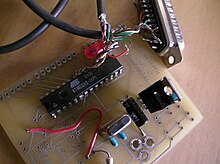

Arduino is an open-source electronics platform designed to make it easy for beginners and professionals to create interactive projects. It consists of both hardware (Arduino boards) and software (Arduino IDE), allowing users to write and upload code to control electronic components like sensors, motors, and LEDs.
Arduino (/ɑːrˈdwiːnoʊ/) is an Italian open-source hardware and software company, project, and user community that designs and manufactures single-board microcontrollers and microcontroller kits for building digital devices. Its hardware products are licensed under a CC BY-SA license, while the software is licensed under the GNU Lesser General Public License (LGPL) or the GNU General Public License (GPL), permitting the manufacture of Arduino boards and software distribution by anyone. Arduino board designs use a variety of microprocessors and controllers. The boards are equipped with sets of digital and analog input/output (I/O) pins that may be interfaced to various expansion boards ('shields') or breadboards (for prototyping) and other circuits. The boards feature serial communications interfaces, including Universal Serial Bus (USB) on some models, which are also used for loading programs. The microcontrollers can be programmed using the C and C++ programming languages (Embedded C), using a standard API which is also known as the Arduino Programming Language, inspired by the Processing language and used with a modified version of the Processing IDE.
Due to its simplicity and versatility, Arduino is widely used in robotics, IoT, home automation, industrial applications, and educational projects.
The Arduino project began at the Interaction Design Institute Ivrea (IDII) in Italy to provide an affordable alternative to the BASIC Stamp microcontroller, which cost $50 at the time. In 2004, Hernando Barragán developed the Wiring platform as part of his Master's thesis under Massimo Banzi and Casey Reas. Wiring featured an ATmega128 microcontroller, an IDE based on Processing, and simplified programming functions.
In 2005, Banzi, along with David Mellis and David Cuartielles, modified Wiring to support the cheaper ATmega8 microcontroller, leading to the creation of Arduino. The original core team included Massimo Banzi, David Cuartielles, Tom Igoe, Gianluca Martino, and David Mellis.
Arduino's open-source nature led to the development of lighter and more affordable versions, contributing to its widespread adoption. By 2011, over 300,000 official Arduino boards had been produced, and by 2013, the number had grown to 700,000.
Arduino is an open-source electronics platform designed to read inputs, process data, and control outputs. It consists of hardware (Arduino board) and software (Arduino IDE) that work together to create interactive projects.
A. Components of an Arduino Board An Arduino board has several essential components: Microcontroller (MCU) – The "brain" of the board, executing the code (e.g., ATmega328P on Arduino Uno). Digital Input/Output (I/O) Pins – Control LEDs, motors, relays, etc. nalog Input Pins – Read sensor values like temperature, humidity, and light. Power Supply (Vin, 5V, 3.3V, GND) – Provides power from USB or an external adapter. USB Port – Uploads code and communicates with the computer. Clock Crystal (16 MHz on Uno) – Keeps timing precise for operations. B. Powering the Arduino Arduino can be powered in multiple ways: USB Connection (5V) – Powers and programs the board. DC Power Jack (7-12V) – External adapter for standalone operation. Battery (9V or 12V) – For portable projects. C. Input & Output (I/O) Operation Inputs: Arduino reads data from sensors (e.g., temperature, buttons, light sensors). Processing: The microcontroller processes the input data using the uploaded program. Outputs: Based on the program, Arduino controls components like LEDs, motors, or displays.
A. Writing Code in Arduino IDE Arduino programs (called sketches) are written in C/C++ in the Arduino IDE. A basic Arduino code structure includes: void setup() { pinMode(13, OUTPUT); // Set pin 13 as an output } void loop() { digitalWrite(13, HIGH); // Turn LED ON delay(1000); // Wait for 1 second digitalWrite(13, LOW); // Turn LED OFF delay(1000); // Wait for 1 second } setup() – Runs once at startup to define pin modes and settings. loop() – Runs continuously, executing tasks repeatedly. B. Uploading Code to Arduino Connect Arduino to PC via USB. Select the Board & Port in Arduino IDE. Click Upload – The compiled code is transferred to the microcontroller. Arduino Runs the Code – Executes the instructions continuously.
A. Communication Protocols
Arduino communicates with external devices using:
Serial Communication (UART) – Transfers data between Arduino and PC using Serial.begin(9600).
I2C Communication – Connects multiple devices like displays and sensors.
SPI Communication – High-speed data exchange with memory cards and sensors.
B. Interfacing with Sensors & Modules
Arduino can be connected to various external components:
Sensors (e.g., temperature, ultrasonic, light) – Input signals processed by Arduino.
Actuators (e.g., motors, relays, buzzers) – Controlled outputs based on code logic.
Displays (LCD, OLED, LED Matrix) – Show output information.
Powering Up – Arduino starts when power is supplied.
Executing setup() – Runs initial configurations once.
Executing loop() – Runs repeatedly, processing inputs and controlling outputs.
Reading Inputs – Arduino reads sensor or button values.
Processing Data – The microcontroller processes data using logic and conditions.
Controlling Outputs – It sends commands to LEDs, motors, or displays.
Repeating the Loop – The process continues indefinitely until power is removed.
Different Arduino boards are available for various applications.
| Board | Microcontroller | Digital I/O Pins | Analog Pins | Best For |
|---|---|---|---|---|
| Arduino Uno | ATmega328P | 14 | 6 | Beginners & small projects |
| Arduino Mega | ATmega2560 | 54 | 16 | Large projects with more I/O |
| Arduino Nano | ATmega328P | 14 | 8 | Compact projects & wearables |
| Arduino Due | AT91SAM3X8E | 54 | 12 | High-speed processing |
| Arduino Leonardo | ATmega32U4 | 20 | 12 | Emulating USB devices (keyboard/mouse) |
Arduino is used in a variety of real-world applications, including:
1. Robotics
- Controlling robotic arms, drones, and automated vehicles.
- Line-following robots, obstacle-avoiding robots.
2. IoT (Internet of Things)
- Home automation (smart lights, automatic door locks).
- Weather monitoring systems (temperature, humidity, and pressure sensors).
3. Smart Wearable Technology
- Heart rate monitors, step counters, fitness bands.
4. Embedded Systems & Industrial Automation
- Automatic plant watering systems.
- Factory process automation using sensors and actuators.
5. Security & Surveillance
- Smart alarms and motion detection.
- Fingerprint or RFID-based access control.
6. Educational & Research Projects
- Teaching electronics and programming in schools and universities.
- Experimenting with AI and machine learning on embedded devices.